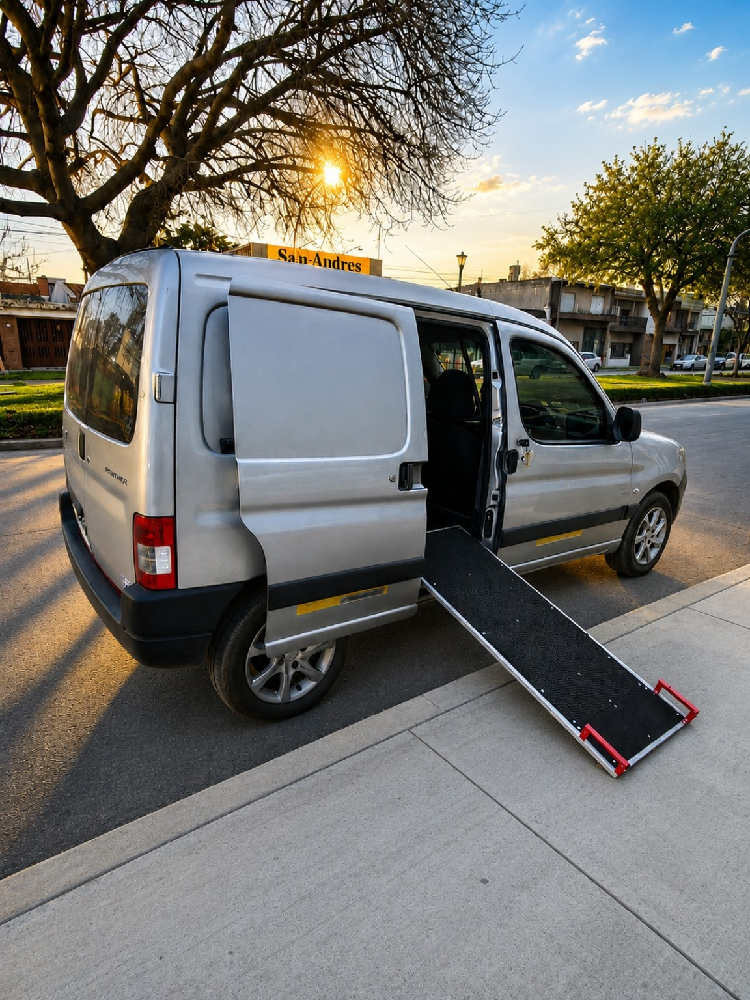

🐾 Más de 100 familias ya confiaron en WUOF
Traslado de Mascotas en Rosario
Viajes seguros, cómodos y puerta a puerta. Vehículo adaptado especialmente para que cada mascota viaje tranquila y protegida.